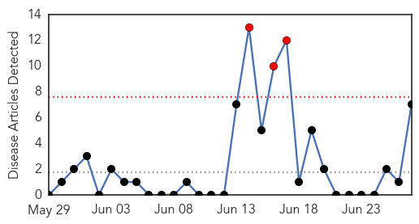

Pertussis
30-Day Web Trend
3 alerts, 0 warnings

30-Day Twitter Trend
0 alerts, 0 warnings

Article Locations

Article Confidences
Top Articles:
- 0.933
- Third baby dies from whooping cough in California
- 0.909
- Whooping cough rates climb in the state, locally
- 0.893
- News Scan for Jun 27, 2014
- 0.851
- Whooping cough cases in San Diego County this year nearly double last year's total
- 0.800
- 3rd California baby dies of whooping cough as epidemic surges
- 0.708
- Whooping cough epidemic in California: More than 1,000 new cases reported
- 0.521
- California's pertussis epidemic escalates, health officials report
Top Tweets:
-
No tweets found for Jun 27, 2014
Chikungunya
30-Day Web Trend
9 alerts, 7 warnings

30-Day Twitter Trend
0 alerts, 0 warnings

Article Locations

Article Confidences
Top Articles:
- 0.996
- Jamaica on high alert for chikungunya virus
- 0.995
- A Second Case of Travel-Related Chickungunya in North Carolina
- 0.993
- First case of chikungunya confirmed in Manatee County
- 0.985
- News Scan for Jun 26, 2014
- 0.984
- Chikungunya Virus Latest
- 0.960
- Suspected chikungunya case under investigation in Randolph Co.
- 0.894
- First Case of Chikungunya Virus Suspected in West Virginia
- 0.626
- 7 News Belize
Top Tweets:
-
No tweets found for Jun 27, 2014